The whole map drawn in crayon: waxy texture, wobbly hand-drawn roads, soft crayon colors, a doodled sun and cloud. Streets are still the real Springfield streets and can still be read — it just looks like a kid drew the world.
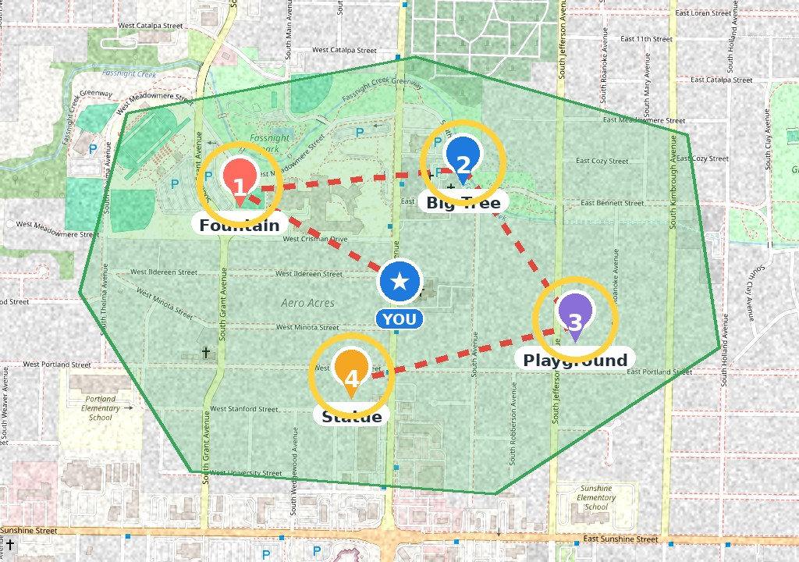
The real street map stays crisp and readable — every street name in place — and the game is drawn on it in crayon: a red crayon dashed route and crayon circles around each hunting spot, with a light waxy grain over the paper.
The whole map drawn in crayon: waxy texture, wobbly hand-drawn roads, soft crayon colors, a doodled sun and cloud. Streets are still the real Springfield streets and can still be read — it just looks like a kid drew the world.

Bright and saturated with the colors turned way up — the same pop treatment the game uses today, pushed brighter. Parks glow green, main roads glow gold, everything reads at a glance from the back seat.
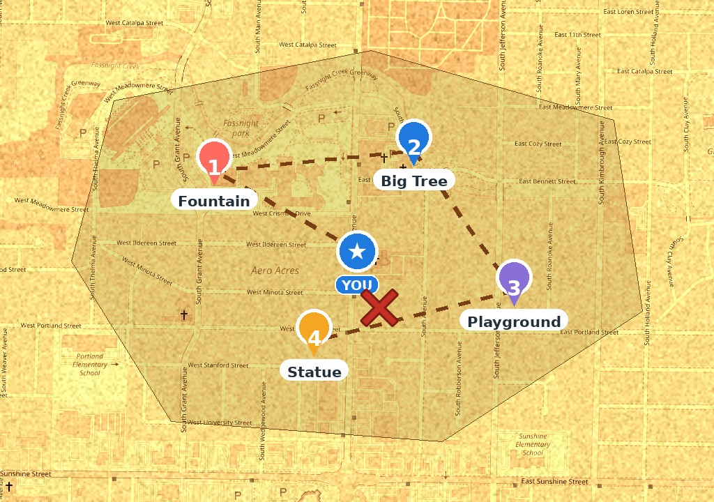
Old parchment and sepia ink: a dashed trail winds between the hunting spots and a big red X waits at the last one. Real street names stay readable under the antique treatment.

Flat poster colors and big simple shapes: bold green parks, blue water, cream blocks, streets as a clean white grid with ink labels. The simplest read of the five — nothing on it a little kid can't follow.
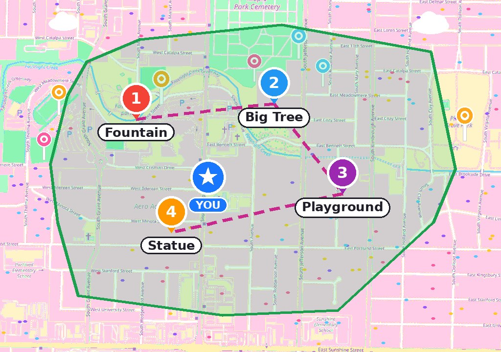
Bubblegum-pink streets blocks, mint-green parks, candy sprinkles on the ground and lollipop trees in the parks. The sweetest map on the board — everything looks good enough to eat, and the streets still read clear.
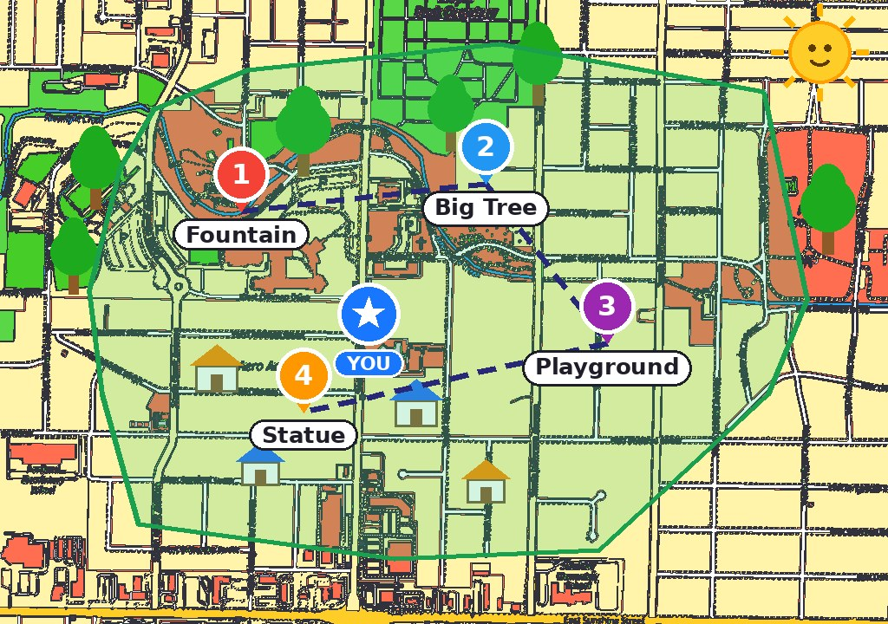
The whole neighborhood built out of toy blocks: bold primary colors, thick outlines on every shape, chunky toy trees and little block houses with bright roofs. The map a kid would build on the living-room floor.
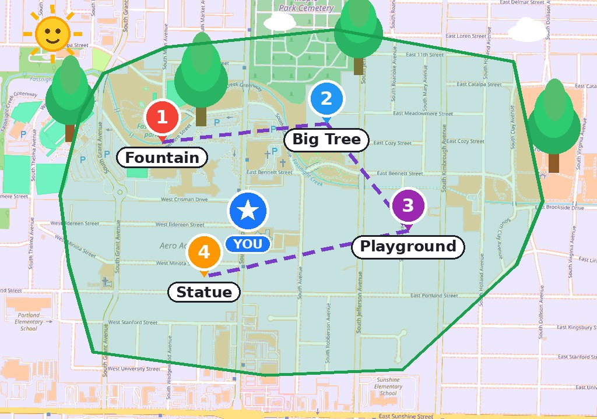
Soft lavender and pastel colors with the parks and water lifted like big stickers with white edges, plus giant sticker trees, a smiling sun and puffy clouds. Gentle and friendly — the softest look of the ten.
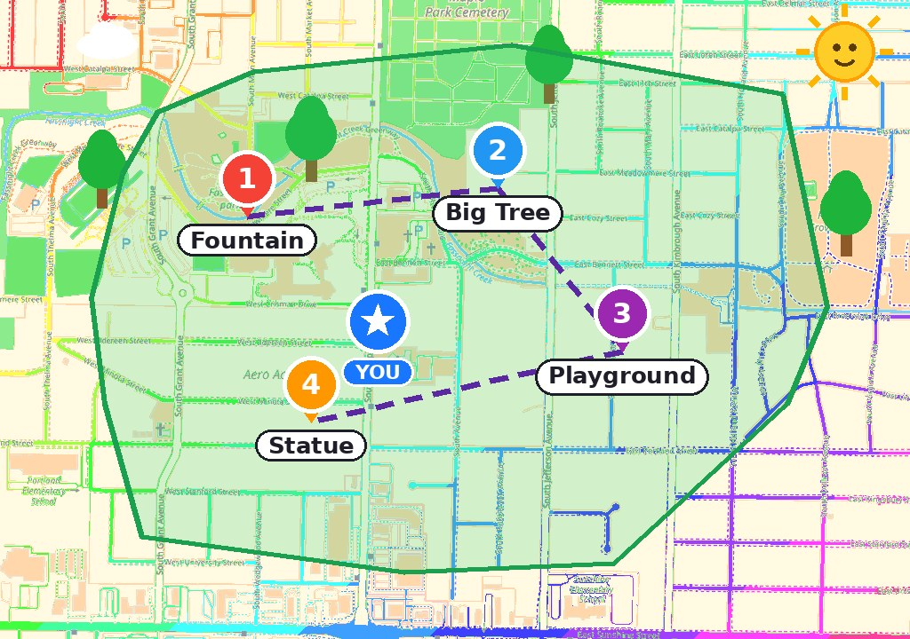
Every street is a ribbon of rainbow — red, orange, yellow, green, blue and purple roads running through a soft cream-and-green neighborhood. The most colorful map on the board; following a street means following a color.
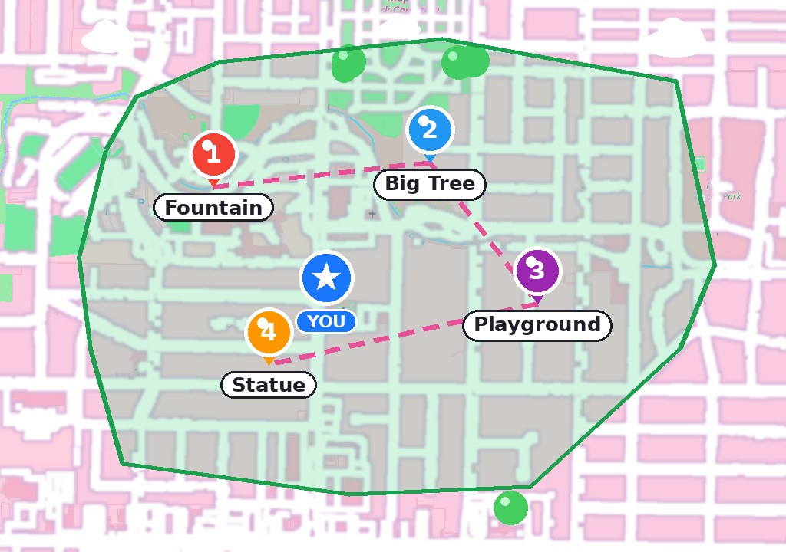
Everything is inflated: fat puffy white roads with soft lavender edges, round balloon trees with shiny highlights, glossy pins and soft pink blocks. Looks like a balloon-animal version of the neighborhood.
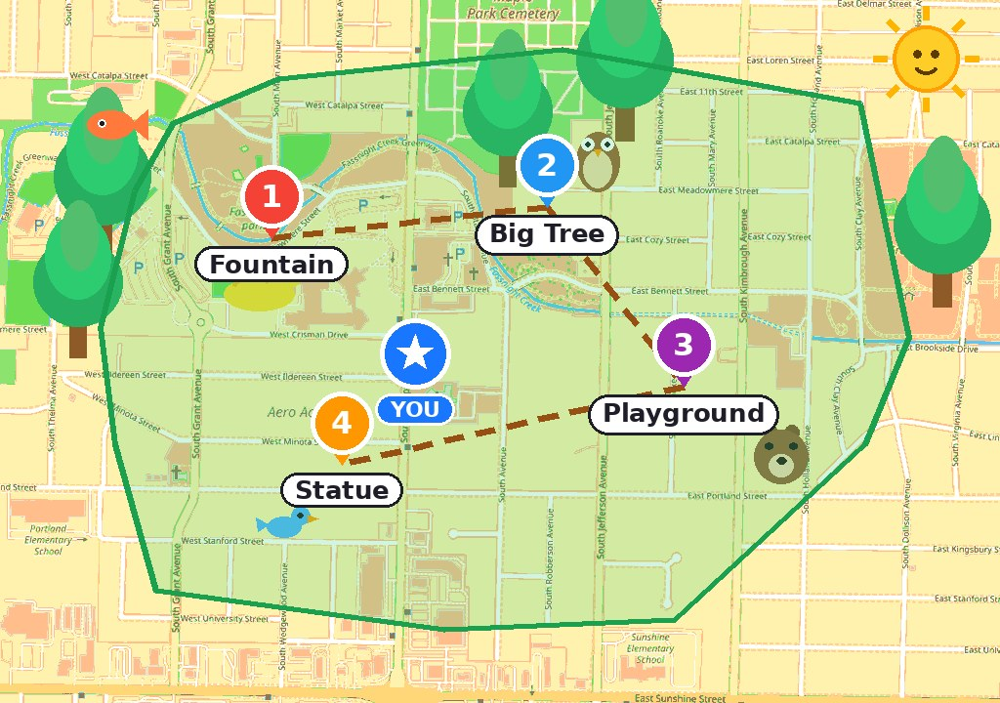
Big friendly animals live on this map: a duck by the fountain pool, an owl in the big-tree woods, a fish in Fassnight Creek, a bear by the playground and a bird near the statue. Bright jungle colors with giant trees — the landmarks are the animals.
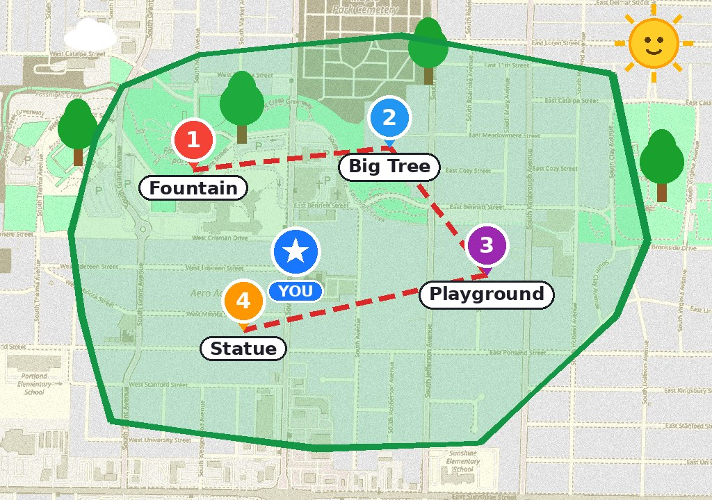
Crayon again, but BOLDER and simpler than samples 1–2: fewer colors, chunkier shapes, a thick red crayon trip path and a big crayon sun. Made so the youngest kids can read it at a glance.
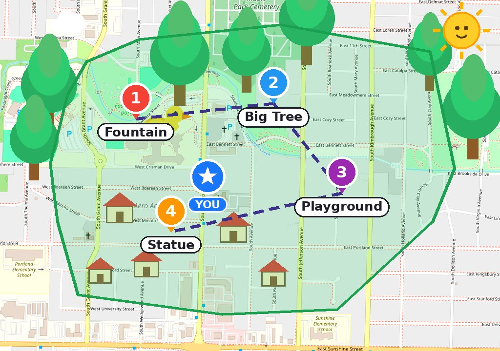
The storybook look with everything GIANT: huge round trees towering over the streets, big red-roof houses in the neighborhood blocks, a giant duck on the pool and a big smiling sun. A picture-book page you can hunt on.
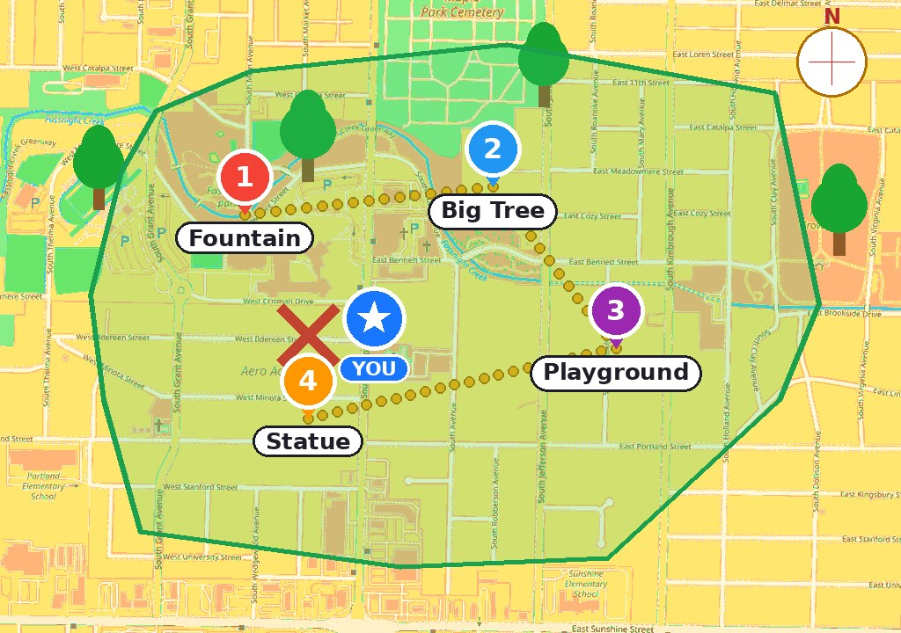
The treasure map from sample 4, remade bright for kids: sunny yellow ground, bright aqua creek, a trail of gold dots to follow, a compass rose in the corner and a giant red X at the last spot. Pirate adventure, no old-paper brown.
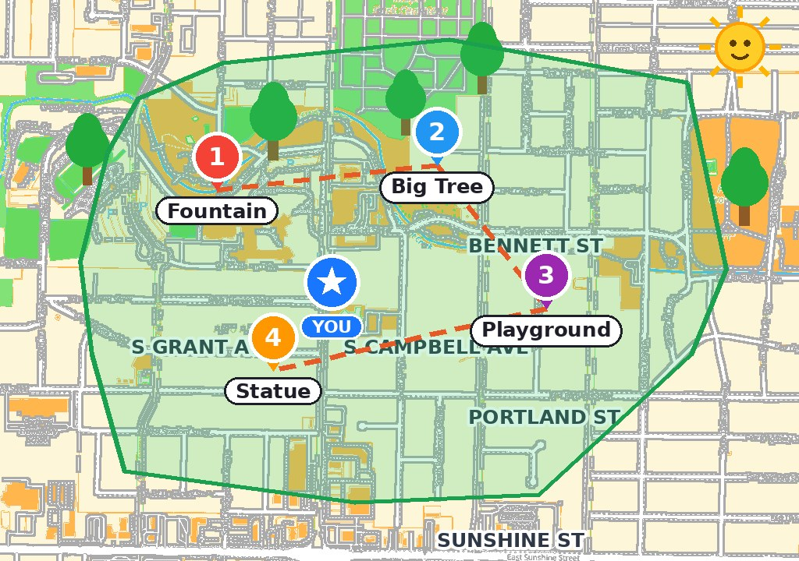
A classroom wall-map atlas, flat and clean: solid color areas, thick white road ribbons, and the big street names printed HUGE — S Grant Ave, S Campbell Ave, Bennett St, Portland St, Sunshine St. The easiest map on the board to actually read.